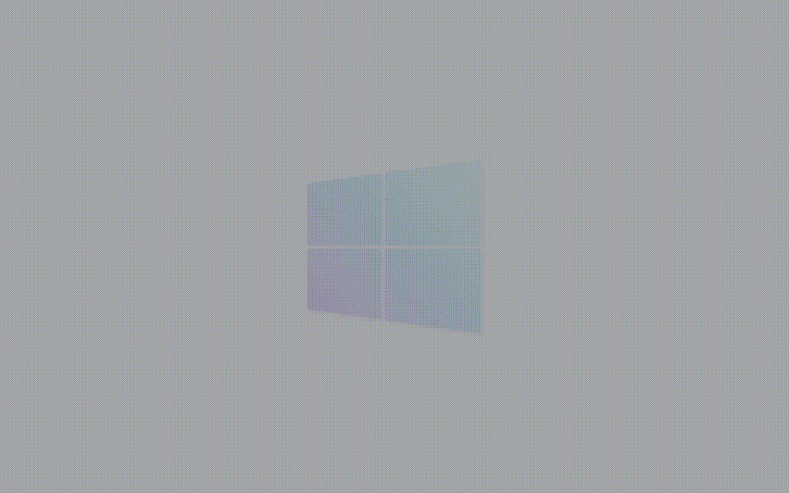
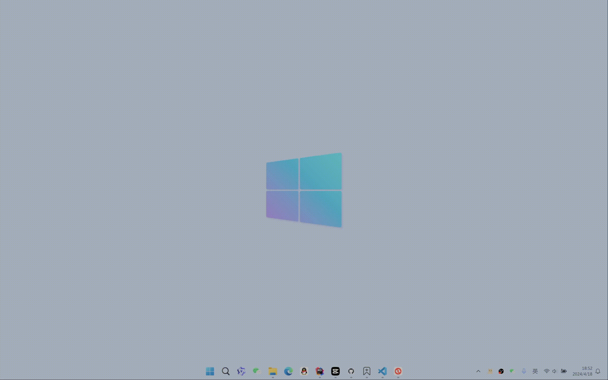
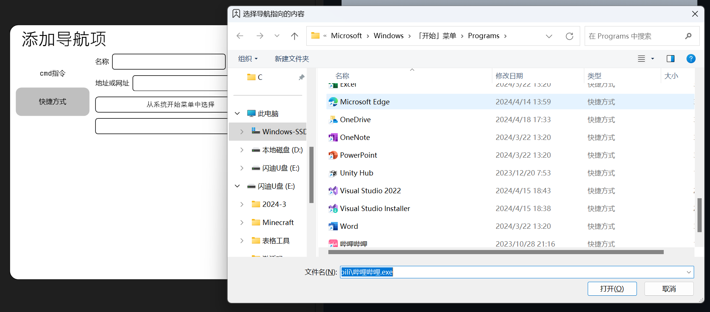
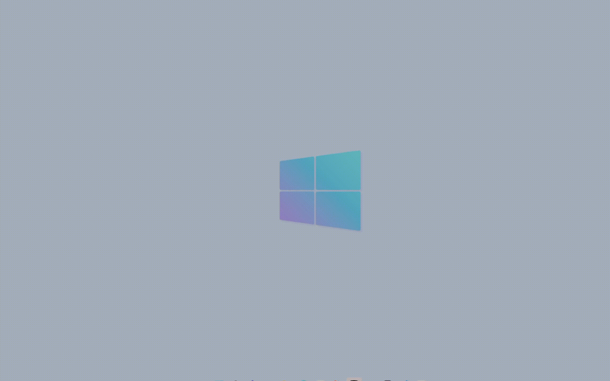
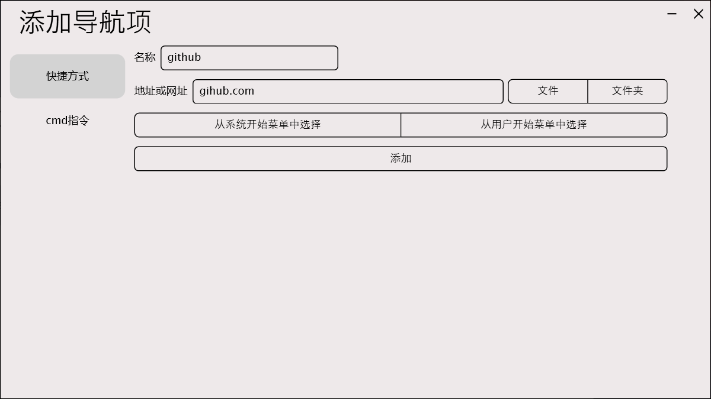
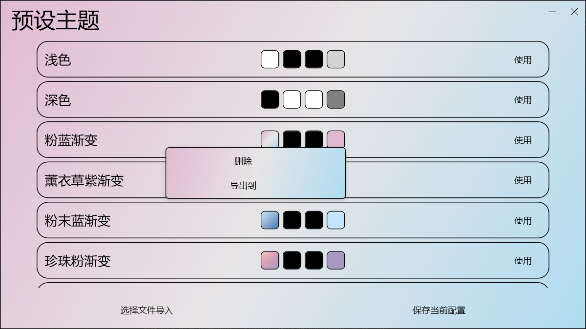

Input Nav (输入导航)
帮助您更好的开始
新的开始方式
只需在输入框中输入，即可打开位于开始菜单中的任何应用、文件
例如打开一个qq
定义自己的路线
对于名字难以输入的文件，我们可以创建一个快捷方式来记住它

然后我们就可以通过输入“bz”来打开哔哩哔哩
无便捷不成效率
如下所示，可以在开始菜单中直接选择应用、文件并为其创建快捷方式
如影随形的助手
细心的您可能发现了，输入框可以在任何位置被键盘快捷键唤醒
所有的文件（没错是所有文件！）都可以像这样创建一个快捷方式，使我们只需要通过键盘就可以快速到达，避免了杂乱不堪的桌面和双手脱离键盘的麻烦
你以为只有这些了吗？
不止用于本地
如果你尝试在输入框中输入没有被保存为快捷方式的内容，那么它将会像下面这样打开默认浏览器进行搜索
至此，让搜索也变的简单
网络中也有您的路线
但如果你想浏览一个网页，例如逛逛GitHub，搜索似乎还是来的慢了点
那么依然只需要将它简单的添加一下
接下来输入github就能直接到达
至此，我们再也不需要输入冗长的网址，浏览器收藏夹的功能也被这个小小的输入框所替代
定义您的指令
它还可以实现几乎任何你需要便捷抵达的功能，不过你可能需要略懂一点cmd指令
例如在与朋友联机游戏时，快速的查看自己的ip地址，那么我们需要打开cmd出入“ipconfig”指令
而现在我们只需要像下面这样添加好

然后每次查看时都只需要输入“ip”即可
融入您的风格
对于这个单调的界面，我们也提供了自定义样式的功能供您配置
背景色
以上四个颜色选项中:
- 主题背景色 控制所有界面的背景颜色
- 主题边框色 控制所有界面、控件的边框颜色
- 主题前景色 控制所有界面、控件的字体、图标颜色
- 主题高亮色 控制所有控件的高亮颜色
分享您的设置
您可以保存自己喜欢的颜色搭配
或者使用他人的色彩方案
当然您也可以将自己的风格分享给他人
简洁却不简单
基于简洁实用且方便的原则，原生的Input Nav主要具备了以上介绍的功能
如果您希望它能更加强大，我们也提供了插件接口 您可以自己开发或使用他人创作的插件来为它点亮新的技能点
看到这里
如果您有兴趣体验由Input Nav提供的帮助，可以点击顶部“下载”进行下载
！！！注： Input Nav目前只支持Windows
对于开发者
如上所述，Input Nav提供了插件接口，您只需简单的了解Api就可以通过C#为其实现更多您希望看到的功能（是的，甚至不需要用到WPF）
关于Input Nav插件开发步骤及Api文档，请查看顶部“开发文档”